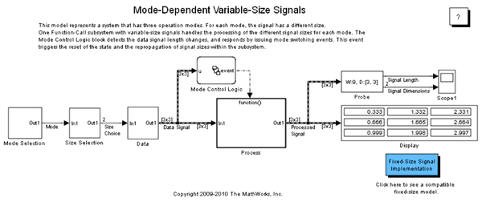

Multimode Variable-Size Signal
This model represents a system that has three operation modes where each mode corresponds to a different signal size.
Contents
About This Demo
Open the demo model sldemo_varsize_multimode. The processing subsystem in this model receives a variable-size signal where the size of the signal depends on the operation mode of the system. For each mode change, the Mode Control Logic Stateflow® Chart generates a function-call to reset the blocks contained in the Process subsystem.
